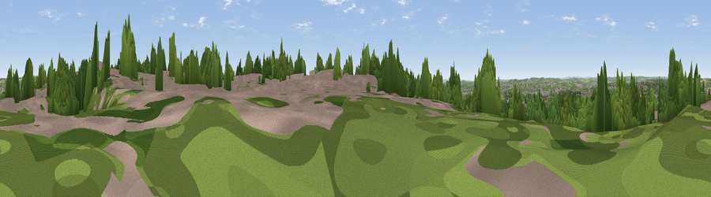

Viewpoint near Nottingham
#40979 in England · top 81% of its area beats it · near Nottingham · path 93 mWhere it is
The exact computed spot (SK 58075 42625). Click the marker for map links.
Public access: the nearest public right of way is about 93 m away — the final stretch may cross private land. Computed from Natural England's CRoW access layer and OpenStreetMap rights of way — not the legal definitive map. Always verify locally.
The view, rendered

A 360° render of this exact spot computed from the terrain model, tree cover and land cover — summer colours, afternoon light, calibrated against photographs of famous viewpoints. Real trees, hedges and buildings will differ in detail.
The panorama
Grey silhouette: terrain skyline in each direction (720 bearings, Earth curvature and refraction included). Dashed green: skyline with trees (+15 m) and buildings (+8 m) as obstacles. Blue strip: how far the ground is visible on each bearing.
Where the view opens
Wedge length = distance to the farthest visible ground on that bearing (vegetation-aware). Rings at 10, 25 and 50 km.
What fills the view
49% built-up · 39% woodland · 7% grassland · 5% cropland
Angular shares of the visible panorama (visual magnitude), not map area. Landscape diversity 0.46 (0–1 Shannon).
Key numbers
More beautiful places nearby
The staircase of upgrades: each row has a higher view potential than everything closer. Driving times are estimates from straight-line distance, calibrated against real road routing — check an actual route before setting out.
| Place | Direction | Drive | Score |
|---|---|---|---|
| Viewpoint near Nottingham | SSW · 1 km | ~2 min | 24.8 |
| East View | SSE · 3 km | ~7 min | 46.2 |
| South Viewing Platform | ENE · 4 km | ~9 min | 50.3 |
| North Viewing Platform | ENE · 4 km | ~10 min | 50.6 |
| Viewpoint near Arnold | NNE · 5 km | ~11 min | 64.1 |
| No Man's Lane | WSW · 13 km | ~24 min | 65.8 |
| Viewpoint near Stathern | ESE · 23 km | ~38 min | 66.3 |
| Viewpoint near Stathern | ESE · 23 km | ~38 min | 67.2 |
52.97784, -1.13654 · source: screening · position refined by local search. Computed location — check access rights before visiting.